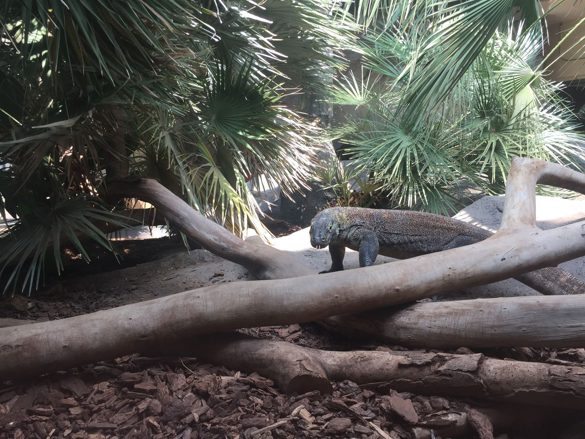
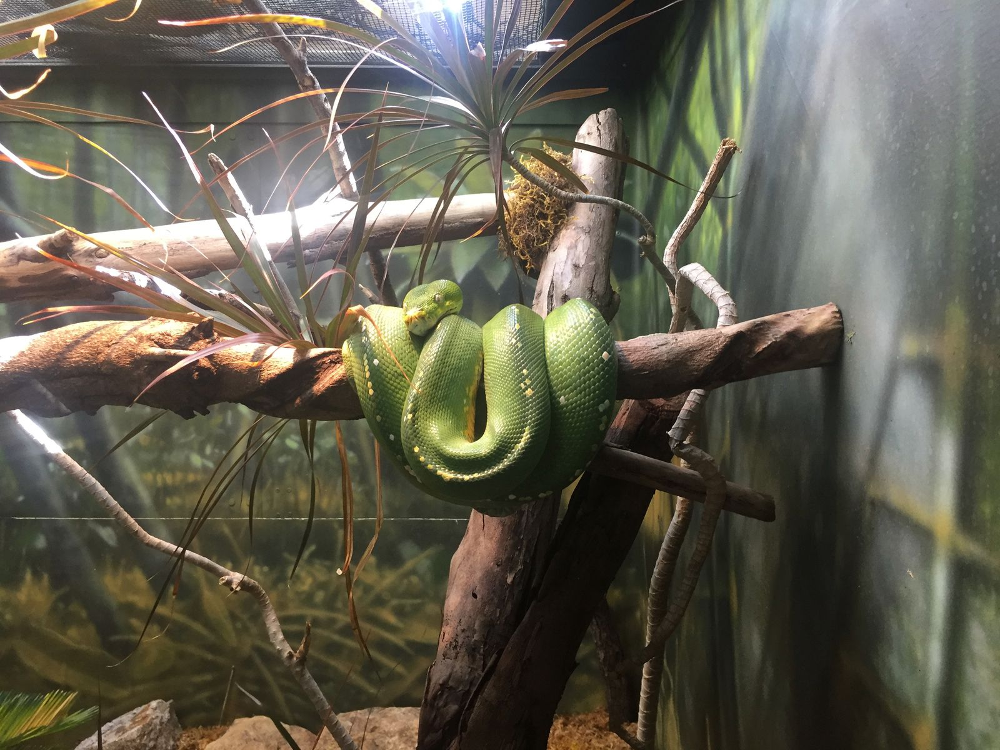
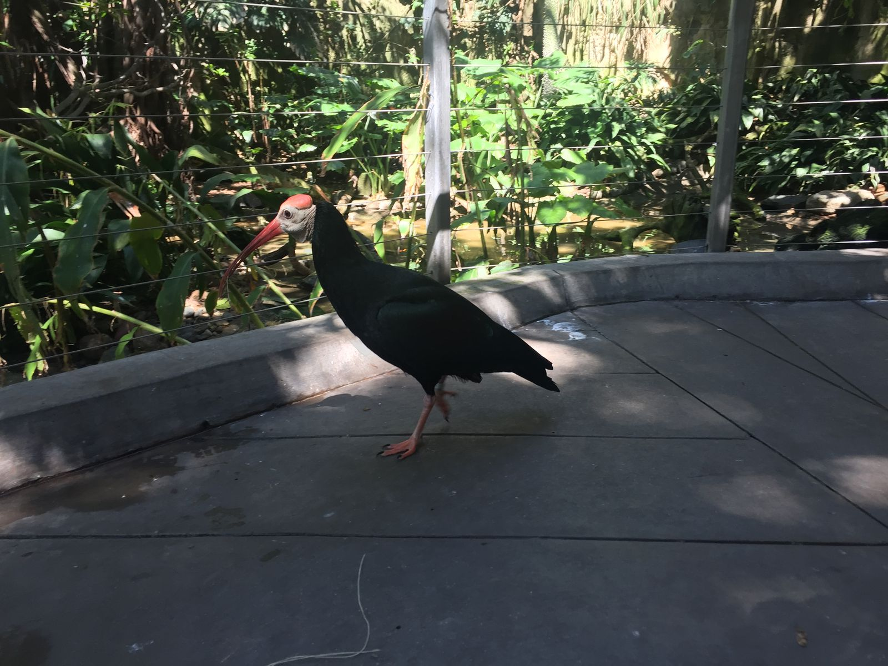
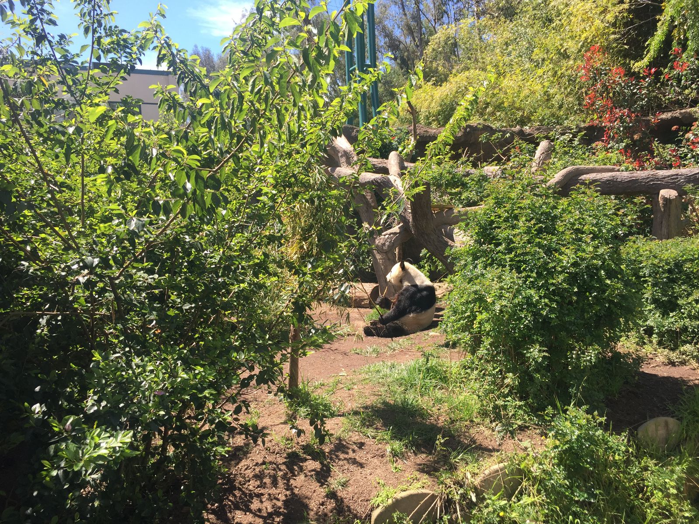
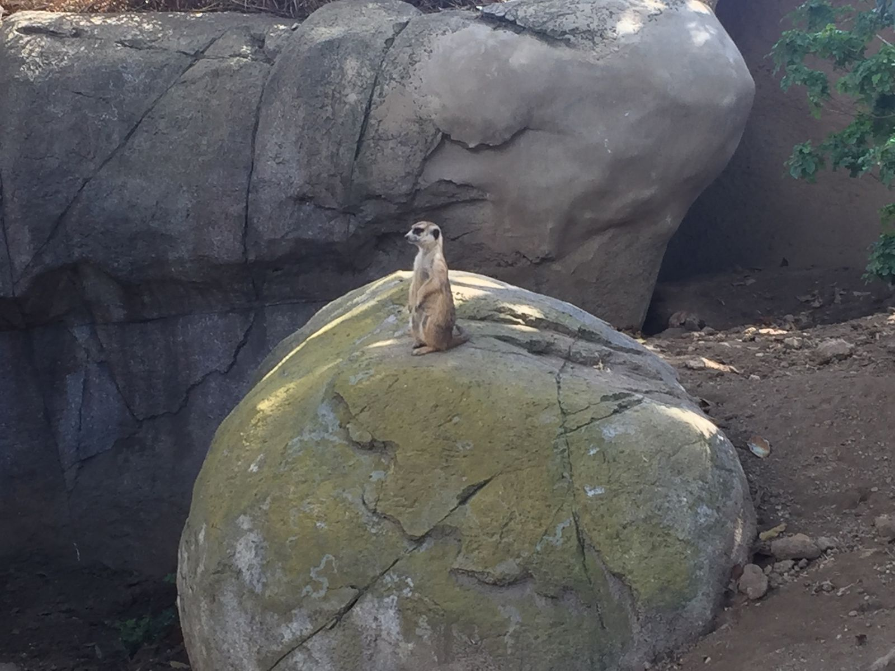
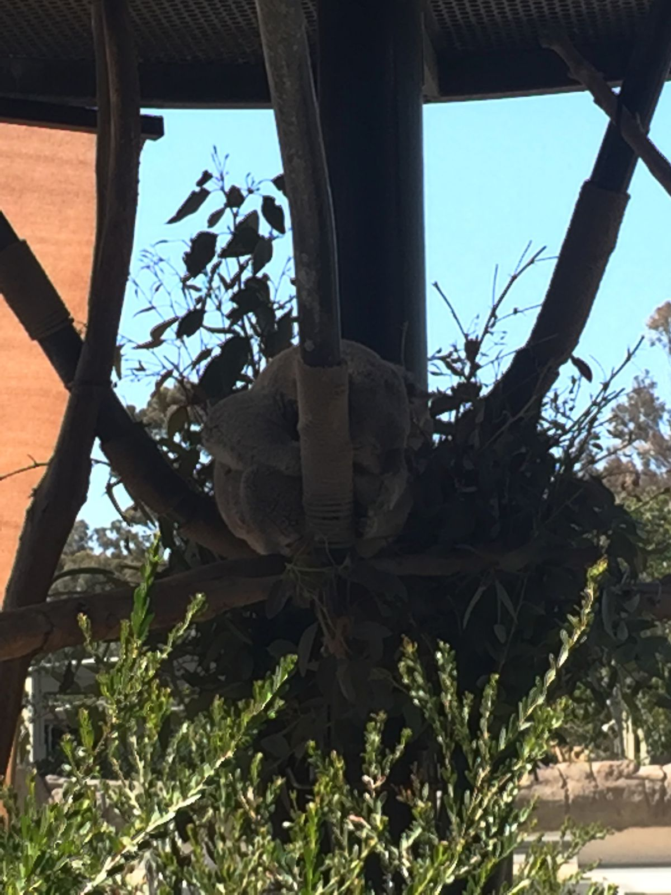
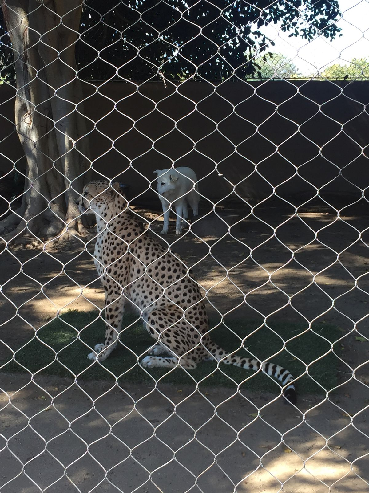
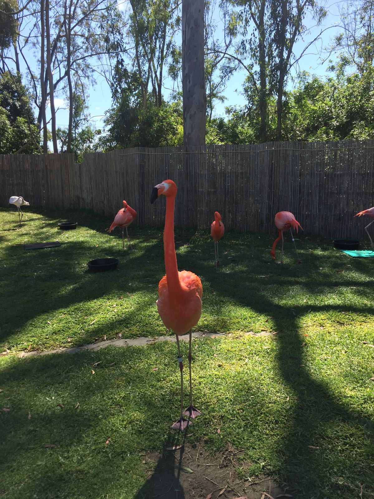
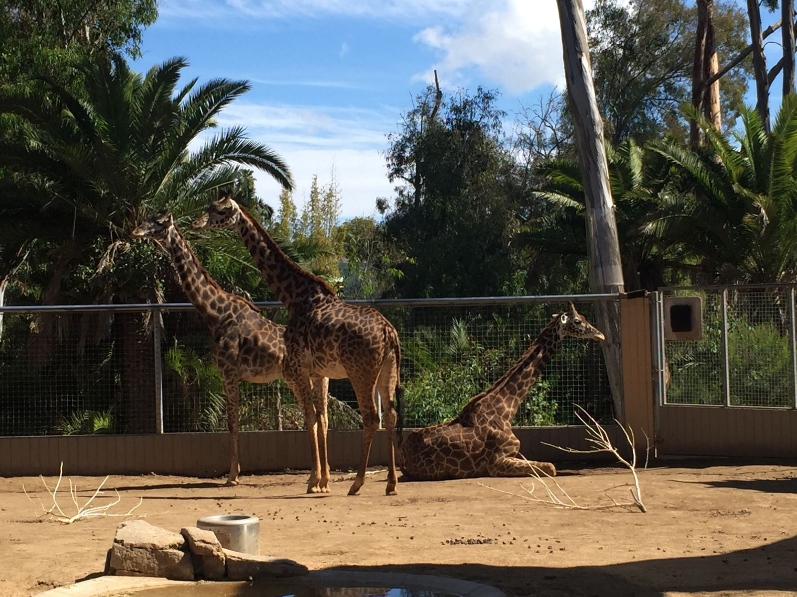

I went to a Zoo!
It's been about 18 years since I've been to the San Diego Zoo, when as a ten-year-old I ran ahead of my parents to see the pandas and subsequently got lost. While I managed to find my way back to them with relative ease (As I approached park staff after getting lost: "where are the pandas?" "Are you lost? Do you need help finding your parents?" "No. Where are the pandas?"), I didn't understand quite how big and complex that zoo can be. Were it not for their map app with GPS location, I would have gotten lost several times in search of the pandas.
Known as one of the best zoos in the world, the San Diego Zoo lived up to its reputation. For everyone who recommended things to do in San Diego, the zoo was always at the top of the list. I spent four hours there and there was still plenty left to see. The food was even half decent! ($18 for a salad with feta, cranberries, and walnuts plus a side of carrots and celery).
I promised myself that I wouldn't take any pictures because it's hard to get good pictures of animals in a zoo. I took a bunch of pictures anyway. Enjoy.








